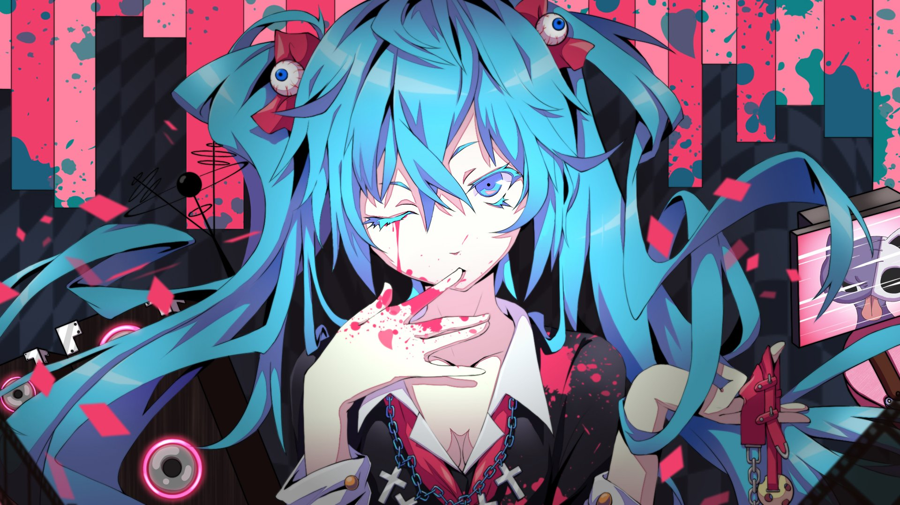
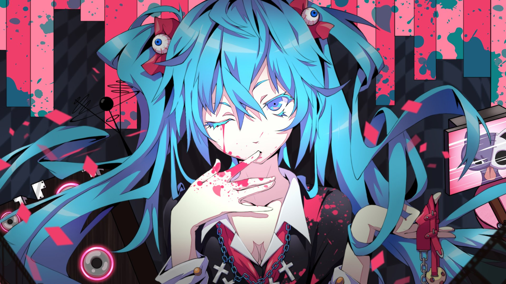

Hatsune Miku é uma personagem e artista virtual, criada pela Crypton Future Media em 2007, que revolucionou a música digital e se tornou um ícone cultural global. Ela é conhecida por ser uma Vocaloid, ou seja, uma voz sintetizada que pode ser utilizada para criar músicas.
Seu nome é a combinação das palavras "hatsu" (初; "primeiro"), "ne" (音; "som") e "miku" (ミク; um nome próprio que tem a mesma ortografia de "futuro") que, juntando, significa "o primeiro som do futuro". É baseado em seu conceito de quando um som é dito pela primeira vez.
Ainda na era VOCALOID2, Miku recebeu bancos adicionais, chamados "Appends", e apenas em setembro de 2013 foi atualizada para o VOCALOID3, onde ganhou um voicebank inglês. Sua atualização para o VOCALOID4 surgiu em agosto de 2016, que, além de renovar os japoneses e o inglês, trouxe como novidade o banco chinês, fazendo com que Miku seja o primeiro Vocaloid trilíngue lançado para o software.